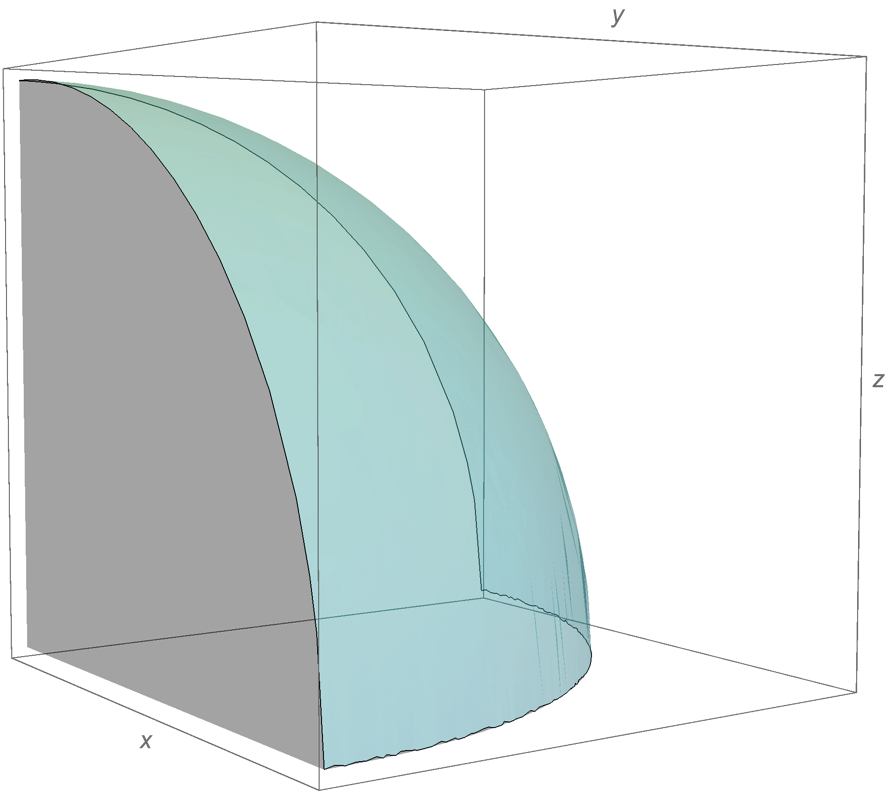
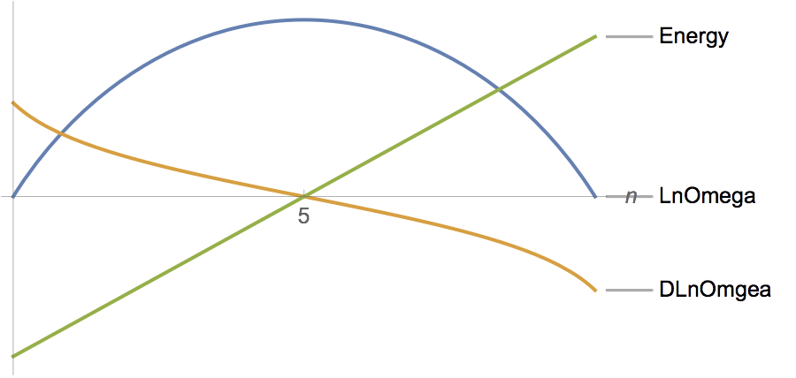

微正则系综
基本概念
微正则系综是指参量为 $N$ $V$ $E$ 的体系，对应于宏观的孤立体系，即「在宏观看来」，体系的粒子数、体积、和内能都不改变。$\newcommand{\dif}{\ma hop{}\ma hrm{d}}$
上一篇博文中我们已经知道，统计力学中存在两个假设，其中一个假设是：微正则系综中各个状态出现的概率相等，用数学语言表达就是： $$ P_{\nu} = \frac{1}{\varOmega(N,V,E)} $$ 其中 $\nu$ 表示某个状态， $\varOmega(N, V, E)$ 表示系统参量为 $N$ 、 $V$ 、 $E$ 时所拥有的状态数。
由玻尔兹曼关系式，体系的熵可以表达为 $$ S = k\ln \varOmega(N, V, E) $$
三维势箱的例子
假想我们把理想气体放在一个长宽高均为 $a$ 的密闭、绝热、体积不变的箱子中，这个箱子中的气体可以看作一个孤立体系，气体的粒子是自由粒子，它们之间的运动无关联。
我们假设这个 $a$ 是 m 的量级，即箱子为宏观尺度上的箱子，体系的粒子数为 $N$ ，体积为 $V$ ，内能为 $E$ 。
下面开始求这个体系的的状态数 $\varOmega(N, V, E)$。
当体系只有一个粒子时
如果体系只有一个粒子，那么粒子的能级为 $$ \epsilon_{n_x, n_y, n_z} = \frac{h^2}{8ma^2}(n_x^2 + n_y^2 + n_z^2) $$ 上面式子中
- $h$ —— 普朗克常量， $6.626\ imes 10^{-34}$ J*s ；
- $m$ —— 粒子质量，g ；
- nx, ny, nz —— x, y, z 方向上的量子数， nx, ny, nz $\in N_+$ ，无量纲。（如果不明白这个公式如何推出来，可以参考Par icle in a box ）
假设给定一个能级 $\epsilon$ ，那么在 $0 \sim \epsilon$ 之间这个粒子存在多少个状态呢？
显然这个数目应该等于所有所有满足
$$ n_x^2 + n_y^2 + n_z^2 \le \frac{8ma^2\epsilon}{h^2} \label{eq:4} $$ 的 [$n_x$, $n_y$, $n_z$] 组合的数量。
如何计算这个数量？当然编程用回溯法不难穷举出所有可能的组合，但是我们不需要知道所有组合具体是什么样，我们只需知道些组合的数量！
$n_x^2 + n_y^2 + n_z^2$ ，好熟悉的公式，这不就是三维空间中点 $(n_x, n_y, n_z)$ 到原点 $O$ 的距离平方吗？再次审视 $\eqref{eq:4}$ ，它表示的是一个球在第一卦限内的部分

$\eqref{eq:4}$ 取等号时所表示的面是八分之一个球面，球面半径为 $$ R = \sqr {\frac{8ma^2\epsilon}{h^2}} $$
我们的任务是求它们组合的个数，也就是求这八分之一球内部有多少个坐标全为正整数的点；当 $\epsilon$ 取值比较大时，球面部分的 aliasing 可以忽略，我们认为这八分之一球内坐标为整数的点的数量等于这八分之一球的体积。
于是问题变得简单起来，在 $0 \sim \epsilon$ 之间
$$
\begin{aligned}
\varPhi(\epsilon) &={} \frac{1}{8} \cdo \frac{4\pi}{3} R^3
&={} \frac{1}{8} \cdo \frac{4\pi}{3} \lef ( \frac{8ma^2\epsilon}{h^2} \righ )^{\frac{3}{2}}
\end{aligned}
$$
那么在 $\epsilon \sim \epsilon + \dif \epsilon$ 之间
$$
\begin{aligned}
\varOmega(\epsilon) &={} \overline{\varOmega}(\epsilon) \dif \epsilon
&={} \frac{\dif}{\dif \epsilon} \varOmega(\epsilon) \dif \epsilon
&={} \frac{\dif}{\dif \epsilon} \frac{\pi}{6} \lef ( \frac{8ma^2\epsilon}{h^2} \righ )^{\frac{3}{2}} \dif \epsilon
&={} \frac{\pi}{6} \lef ( \frac{8ma^2}{h^2} \righ )^{\frac{3}{2}} \cdo \frac{3}{2} \epsilon^{\frac{1}{2}} \dif \epsilon
&={} \frac{\pi}{4} \lef ( \frac{8ma^2}{h^2} \righ )^{\frac{3}{2}} \cdo \epsilon^{\frac{1}{2}} \dif \epsilon
\end{aligned}
$$
当然我们也可以直接用球面面积公式计算 $\varOmega(\epsilon)$ ，得到的结果和上面的一样。
当体系有 $N$ 个粒子时
我们认为这 $N$ 个粒子是全同，即不可分辨的，同时我们要描述这个系统的某个状态需要知道所有粒子的量子数，所以体系的总量子数 ${n}$ 就从 3 个变成了 3 $N$ 个，此时能级的计算公式将变成 $$ E({nj}) = \frac{h^2}{8ma^2} \sum{j=1}^{3N} n_j^2 $$ ${n_j}$ 所存在的空间不再是三维，而是 $3N$ 维，谷歌告诉我们 $3N$ 维空间中球的体积公式为 $$ V_{3N}® = \frac{\pi^{3N/2}}{\Gamma(\frac{3N}{2} + 1)} \cdo R^{3N} $$ 其中 $\Gamma(\frac{3N}{2} + 1)$ 是一个 Gamma 函数 ，
$$
\Gamma(x) = \in _{0}^{+\inf y} ^{x-1} e^{- } \dif
$$
它满足
- $\Gamma(0) = 0$ ；
- $\Gamma(\frac{1}{2}) = \sqr {\pi}$ ；
- $\Gamma(x+1) = x\cdo \Gamma(x)$ 。
那么在这个球的”第一卦限”内的体积为这个球的 $\frac{1}{2^{3N}}$ ，于是在 $0 \sim E$ 之间 $$ \varPhi(E) = \frac{1}{2^{3N} \cdo N!} V_{3N}® $$
上面式子分母中的 $N!$ 正体现了粒子的不可分辨性。而
$$
\begin{aligned}
R^2 &={} \sum_j n_j^2
E({n_j}) &={} \frac{h^2}{8ma^2} R^2
\end{aligned}
$$
上面式子导出
$$
R = \sqr {\frac{8ma^2}{h^2}E}
$$
那么在 $E \sim \dif E$ 之间，体系的状态数为
$$
\begin{aligned}
\varOmega(E) &={} \frac{\dif}{\dif E} \varPhi(E) \dif E
&={} \frac{1}{2^{3N} \cdo N!} \cdo \frac{\pi^{3N/2}}{\Gamma(\frac{3N}{2} + 1)} \frac{\dif}{\dif E} \lef ( \frac{8ma^2}{h^2}E \righ )^{\frac{3N}{2}} \dif E
&={} \frac{1}{2^{3N} \cdo N!} \cdo \frac{\pi^{3N/2}}{\Gamma(\frac{3N}{2} + 1)} \lef ( \frac{8ma^2}{h^2} \righ )^{\frac{3N}{2}} \cdo \frac{3N}{2} \cdo E^{\frac{3N}{2}} \frac{\dif E}{E}
&={} \frac{1}{N!} \cdo \frac{1 }{ \Gamma(\frac{3N}{2})} \cdo \lef ( \frac{2 \pi ma^2}{h^2} \righ )^{\frac{3N}{2}} E^{\frac{3N}{2}} \frac{\dif E}{E}
&={} \frac{1}{N!} \cdo \frac{a^{3N}}{\Gamma(\frac{3N}{2})} \cdo \lef ( \frac{2 \pi mE}{h^2} \righ )^{\frac{3N}{2}} \frac{\dif E}{E}
&={} \frac{1}{N!} \cdo \frac{V^{N}}{\Gamma(\frac{3N}{2})} \cdo \lef ( \frac{2 \pi mE}{h^2} \righ )^{\frac{3N}{2}} \frac{\dif E}{E}
\end{aligned}
$$
下面来解决 $\Gamma(\frac{3N}{2})$ 值的问题。
根据 $\Gamma(x+1) = x\Gamma(x)$ ，可以得到 $\Gamma(\frac{3N}{2}) = (\frac{3N}{2} - 1) \cdo \Gamma(\frac{3N}{2} - 1) =\cdo s= (\frac{3N}{2} - 1)!$
于是 $\Omega(E)$ 中 $N! \cdo \Gamma(\frac{3N}{2})$ 可以使用斯特灵近似来计算
$$
\begin{aligned}
\verb|le |\quad X &={} N!\cdo \lef (\frac{3N}{2} - 1\righ )!
\ln X &={}N\ln N - N + \lef (\frac{3N}{2}-1\righ ) \ln \lef (\frac{3N}{2}-1\righ ) - \lef (\frac{3N}{2} - 1\righ )
&\sim{} N\ln N + \frac{3N}{2}\ln\frac{3N}{2}
&\sim{} \frac{5N}{2}\ln N
\end{aligned}
$$
为了式子的简洁，我们把不需要关心的部分放到 $f(N)$ 中，表示含 $N$ 的系数， $\varOmega(E)$ 可以化简为
$$
\ln \varOmega(E) = f(N) + N\ln V + \frac{3N}{2}\ln E + \ln\frac{\dif E}{E}
$$
此时使用热力学基本公式的变形
$$
\dif \ln \varOmega = \be a \dif E + \be a p\dif V - \be a \mu\dif N
$$
可以得到以下热力学量
$$
\begin{aligned}
\be a &={} \frac{1}{kT} = \lef (\frac{\par ial \ln\varOmega}{\par ial E}\righ ){N, V} = \frac{3N}{2} \cdo \frac{1}{E}
&\Longrigh arrow {} E = \frac{3}{2} NkT ;
p\be a &={} \frac{p}{kT} = \lef (\frac{\par ial \ln\varOmega}{\par ial V}\righ ){N, E} = \frac{N}{V}
&\Longrigh arrow {} p = \frac{NkT}{V}
&\Longrigh arrow {} pV = NkT = \frac{NRT}{N_A} = nRT .
\end{aligned}
$$
- $E = \frac{3}{2} NkT$ 正是理想气体的平动动能表达式（事实上这个体系中的内能只包含粒子的平动动能）；
- $pV=nRT$ 也恰好是理想气体状态方程。
于是我们从两个假设出发，对三维势箱内的无关联全同粒子系统使用微正则系综进行研究，得到了以前学过的理想气体的状态方程和理想气体的平动动能表达式，很神奇有木有？别急着惊讶，更神奇的东西在后面。
重新审视 $\be a$
上一小节我们使用热力学基本关系式的变形得到了 $\be a$ 的表达式 $$ \be a = \frac{1}{kT} = \lef (\frac{\par ial \ln\varOmega}{\par ial E}\righ ){N, V} $$ 很明显，如果 $\lef (\frac{\par ial \ln\varOmega}{\par ial E}\righ ){N, V}$ 为正，即体系的 $\varOmega$ 随 $E$ 的增大而增大，那么 $\be a = \frac{1}{kT}$ 为正，换言之，当体系的状态数，或称混乱度随内能增大而增大，体系的温度为正；那么，反过来，如果体系的状态数随内能增大而减小，体系的温度也可以为负吗？
自旋系统的例外
假想我们有一个纯自旋系统，系统中存在方向向下的磁场 $\vec{H}$，其中含有 $N$ 个粒子，它们各自拥有的磁矩 $\vec{\mu}$ 都只能与 $\vec{H}$ 共线，且磁矩的模长都是 $\mu$ ，于是对于每个粒子，它们所处的能级有
$$
\epsilon = %
\begin{cases}
\mu H & \mu \uparrow
-\mu H & \mu \downarrow
\end{cases}
$$
那么对于这个 $N$ 粒子的系统，当有 $n$ 个粒子磁矩 $\uparrow$ 时，它们的总能量为
$$
\begin{aligned}
E &={} n\mu H + (N-n)(-\mu H)
&={} (2n - N)\mu H
\end{aligned}
$$
此时体系的状态数 $\varOmega$ 应为
$$
\varOmega = C_N^n = \frac{N!}{n! \cdo (N-n)!}
$$
作出图像可以看出

- 随着 $\ln \varOmega$ 的增大， $\frac{\dif \ln\varOmega}{\dif E}$ 在减小，也就是说 $\be a$ 在减小，而 $\be a = \frac{1}{kT}$ ，则温度在升高，但还是正值，到这里还没什么异常；
- 当 $n = \frac{N}{2}$ 时， $\ln \varOmega$ 达到极大值，$\frac{\dif \ln\varOmega}{\dif E}$ 为 0 ！换言之 $T \ o \inf y$ ；
- 当 $n$ 继续增大， $\frac{\dif \ln\varOmega}{\dif E}$ 变成了负值 ， $T < 0$ ！
我们从唯象地看待一下这个系统：如果这个系统的所有粒子磁矩方向全部相同，那么这个系统的有序度最高，这是毫无疑问的；那什么时候系统的有序度最呢？肯定是一半粒子磁矩朝上，另一半朝下的时候，此时系统的熵最大。所以当 $n$ 从 0 增长到 $\frac{N}{2}$ 的过程中，系统的熵一直在增大，体系的内能也在增大；但是当 $n$ 增长到 $\frac{N}{2}$ 时，体系的熵达到了最大，之后熵就开始变小，但体系的能量却在一直增加，这显然是不合理的。
哪里出了问题呢？
负温度的成因
上面的自旋系统是一个受限系统，所谓受限是指：
- 能级数量受限；
- 状态数量受限；
- 总能量受限；
- 熵受限。
但现实不存在这样的系统，就连本文前半部分讲到的理想气体系统，它的能级数量也是无限的，因此在那个系统中得到的热力学量不会出现负温度这种奇怪的结果。
负温度的结果虽然奇怪，但不妨碍我们再次讨论一下由它衍生出的一些有意思的东西：
- 当 $n \ o \frac{N^-}{2}$ ， $\be a \ o 0^+$ ， $T \ o +\inf y$ ；
- 当 $n \ o \frac{N^+}{2}$ ，$\be a \ o 0 ^-$ ， $T \ o -\inf y$ ；
- 当 $n = \frac{N}{2}$ ， $\be a = 0$ ， $T \ o \inf y$ 。
我们比较关心当 $n$ 跨越 $\frac{N}{2}$ 那一点时， $T$ 为什么可以从正无穷一下子跳到了正无穷。其实我们换一个思路，让 $T$ 处在一个复平面上，而复平面上的无穷全都是连在一起的 ，于是 $T$ 可以很自然地跨过那个奇点，表现出从负无穷到正无穷的跨越。
参考 & 致谢
Wikipedia 已在超链接中给出；
《李政道讲义：统计力学》；
《现代统计力学导论》 David Chandler；
徐老师、侯老师。
顺便强烈吐槽 Hexo 的渲染功能，迭代了这么多版本，还没解决 Ma hJax 行内公式与下划线强调的冲突问题，强烈差评。